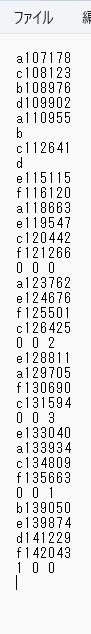

#include <BleKeyboard.h>
BleKeyboard bleKeyboard("ESP32 Keyboard");
const int button0Pin = 15;//L0
const int button1Pin = 2;//L1
const int button2Pin = 0;//R0
//前フレーム押したか検出用
bool pushed0 = false;
bool pushed1 = false;
bool pushed2 = false;
//2つ離したときに押したか検出用
bool isInputL = false;
bool isInputR = false;
//各ボタンを押したり放した時間
unsigned long downLTime = 0;
unsigned long upLTime = 0;
unsigned long downRTime = 0;
unsigned long upRTime = 0;
//左右のボタングループでどのボタンを押したか
int buttonLNumber =- 1;
int buttonRNumber = -1;
//グループごとにボタンを押しているか
bool isPushingL = false;
bool isPushingR = false;
void setup() {
pinMode(button0Pin, INPUT_PULLUP);
pinMode(button1Pin, INPUT_PULLUP);
pinMode(button2Pin, INPUT_PULLUP);
Serial.begin(115200);
Serial.println("Starting BLE work!");
bleKeyboard.begin();
}
void loop() {
if (bleKeyboard.isConnected()) {
//グループごとにいくつボタンを押しているか
int buttonsLCounter = 0;
int buttonsRCounter = 0;
//ボタン0の入力処理
int button0Value = digitalRead(button0Pin);
if(button0Value == LOW){//押している
buttonsLCounter++;
if(pushed0 == false){//このフレームが初めて(押した瞬間)
pushed0 = true;
if(isPushingL == false){//グループ内で初めて
isPushingL = true;
downLTime = millis();
bleKeyboard.print("a");
bleKeyboard.println(downLTime);
buttonLNumber = 0;
}
else{
bleKeyboard.println("a");
}
}
}
else{//押していない
if(pushed0){//このフレームで初めて(放した瞬間)
pushed0 = false;
if(buttonLNumber == 0){//グループ内で初めて押したボタンが放された
bleKeyboard.print("c");
upLTime = millis();
bleKeyboard.println(upLTime);
}
else{
bleKeyboard.println("c");
}
}
}
//ボタン1の入力処理
int button1Value = digitalRead(button1Pin);
if(button1Value == LOW){
buttonsLCounter++;
if(pushed1 == false){
pushed1 = true;
if(isPushingL == false){
isPushingL = true;
downLTime = millis();
bleKeyboard.print("b");
bleKeyboard.println(downLTime);
buttonLNumber = 1;
}
else{
bleKeyboard.println("b");
}
}
}
else{
if(pushed1){
pushed1 = false;
if(buttonLNumber == 1){
bleKeyboard.print("d");
upLTime = millis();
bleKeyboard.println(upLTime);
}
else{
bleKeyboard.println("d");
}
}
}
//ボタン2の入力処理
int button2Value = digitalRead(button2Pin);
if(button2Value == LOW){//押している
buttonsRCounter++;
if(pushed2 == false){//このフレームが初めて(押した瞬間)
pushed2 = true;
if(isPushingR == false){//グループ内で初めて
isPushingR = true;
downRTime = millis();
bleKeyboard.print("e");
bleKeyboard.println(downRTime);
buttonRNumber = 0;
}
else{
bleKeyboard.println("e");
}
}
}
else{//押していない
if(pushed2){//このフレームで初めて(放した瞬間)
pushed2 = false;
if(buttonRNumber == 0){//グループ内で初めて押したボタンが放された
bleKeyboard.print("f");
upRTime = millis();
bleKeyboard.println(upRTime);
}
else{
bleKeyboard.println("f");
}
}
}
//入力情報からの処理
if(buttonsLCounter == 0){
isPushingL = false;
}
if(buttonsRCounter == 0){
isPushingR = false;
}
if(isPushingL == false && isPushingR == false){//両方放した
if(buttonLNumber != -1 && buttonRNumber != -1){//何かしら入力した
bleKeyboard.print(buttonLNumber);
bleKeyboard.print(" ");
bleKeyboard.print(buttonRNumber);
bleKeyboard.print(" ");
int input = 0;
if(downLTime > downRTime)input+=1;
if(upLTime > upRTime)input += 2;
bleKeyboard.println(input);
}
buttonLNumber = -1;
buttonRNumber = -1;
}
}
delay(10);
}
